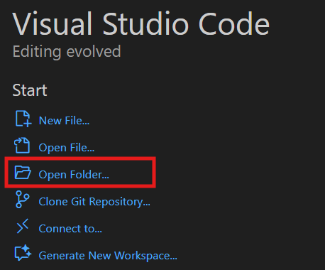
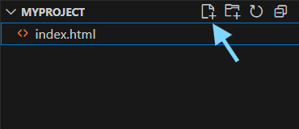
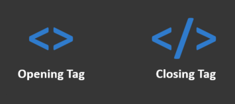
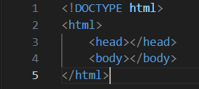
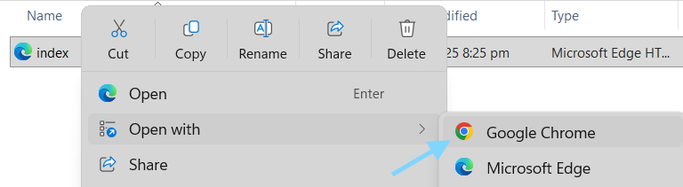
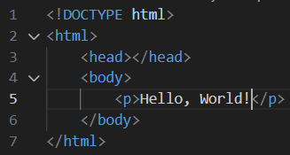
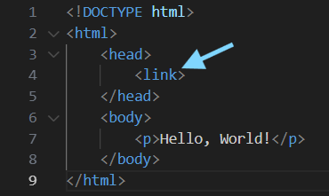
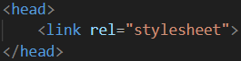
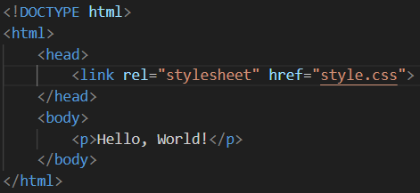

This quick guide gives you a straightforward overview of the core concepts in web development. It’s meant to be quick to go through—helpful for reviewing fundamentals or getting an initial sense of how coding works. It’s not a full course, but a practical starting point or refresher.
A quick note about the design of this page: it’s intentionally simple.
I’m starting with my own CSS reset—a small set of default rules that clears away browser inconsistencies.
The purpose of this project is to test that reset and make sure it works well across all elements.
Because of that, the design here is kept plain and minimal, so expect simplicity rather than advanced styling.
The Builder, The Designer, and The Systems Engineer
Building a website is like constructing an infrastructure. You first need the place to build on and the materials to start with. From there, design shapes the experience, and engineered systems connect everything into a responsive, functional whole.
The Builder → HTML, providing the structure—the place and materials of your site.
The Designer → CSS, shaping the design and creating a clear, appealing interface.
The Systems Engineer → JavaScript, integrating the functionality and connections—like plumbing and wiring—so the page becomes interactive and dynamic, adapting to user actions and keeping data flowing smoothly.
Getting Started: Essential Tools
You don’t need much to begin—just a code editor to write your files and a browser to test them.
Many options exist, but here are two reliable starting points:
A code editor is where you create and manage your files. Visual Studio Code is a popular choice because it’s powerful yet beginner-friendly.
With features like auto-completion, debugging, and extensions included, you can get started quickly without extra setup.
The browser is where you see your code in action. Chrome is widely used, making it a reliable choice for testing since it reflects what most visitors will experience.
Some developers also use Firefox for its developer tools, but Chrome is a solid default for everyday testing.
Lay the Groundwork
Let’s put everything into action. By now, you should already have your editor and browser ready. If not, download them here:
Start by making a new folder anywhere on your computer. This will hold all the files
for your project.
Step 2: Open the Folder in VS Code
Open Visual Studio Code.
Go to File > Open Folder and select the folder you just created.

Opening your new project folder in Visual Studio Code.
Step 3: Add Your First File
Once inside VS Code, create a new file and name it index.html.
You can use the New File icon or a keyboard shortcut.

Creating your first file, index.html, in VS Code.
Step 4: Set Up the Foundation
Now open index.html and add the very first pieces of code to create the html element—the location where your site's metadata and all the elements will live:
<!DOCTYPE html>
<html></html>
Here’s what’s happening:
<!DOCTYPE html> → Tells the browser you’re using the latest
version of HTML (HTML5).
<html> ... </html> → The HTML element
wraps everything on your page. All your content will go inside these tags.

Basic HTML tags: opening and closing pairs enclose your content.
Tags usually work in pairs: an opening tag<tag>
and a closing tag</tag>.
Whatever goes in between is the element’s content.
Step 5: Add the Core Sections
Inside the <html> tags, we add two essential parts:
<head></head>
<body></body>
<head> → Think of this as the backstage area.
It holds metadata, stylesheets, and scripts that prepare your page.
While most of it isn’t visible to the user, some things—like the title and favicon—do appear.
<body> → This is the main stage.
Everything the user sees and interacts with—text, buttons, links—goes here.
At this point, your file should look like this:

Your basic HTML boilerplate: doctype, html, head, and body sections.
The setup is complete—you’ve reached your first milestone: your project location is ready for building.
Foundation & Materials
Browser View
To view your output, you have two options.
First, you can right–click on the HTML file in your file explorer and open it with your browser (like Chrome).
Second, you can install the Live Server extension in VS Code, which allows you to preview your site in real-time as you code.

Right-click to open your index.html directly in Chrome for a quick preview.
If you open index.html right now, you’ll just see a completely blank page.
That’s normal—because we haven’t added any content yet.
In the next step, we’ll start placing your first materials on the page.
Adding Your First Material: Text and Color
Let’s start by putting text on your site. Text is the most common and one of the most important elements in any webpage—it lets you communicate ideas, details, and information to your users.
Earlier, you learned about opening and closing tags.
Now, let’s put one of the simplest tags into action.
Inside your <body> section, add a <p> element.
This represents a paragraph of text.
<p></p>
Whatever you put between these tags becomes your paragraph’s content. For example:
<p>Hello, World!</p>
What you have now is a paragraph element containing the text Hello, World!.

Adding a paragraph element inside the body tag to display your first text.
🎉 Great! You’ve just added your first material. Your site now has its first visible content.
Connecting the Design
It still looks simple for now, because we’re just building.
Next, let’s add our first bit of design.
Create a new file and name it style.css.
This is where we’ll place all the styling instructions.
But before it can take effect, we need to link this file to our HTML so the browser knows which design belongs to which content.
Inside your <head> tag, add the <link> tag.
This tells the browser we’re linking to another file.

Inserting the link tag in the head to reference external files like stylesheets.
Next, specify the relationship of this link to the current file using the rel attribute:
<link rel="stylesheet">

Specifying the rel attribute to define the link type (e.g., stylesheet).
Then, tell the browser which file we’re linking to by adding the href attribute:
<link rel="stylesheet" href="style.css">

Adding the href attribute to point to your specific CSS file.
Perfect! Your builder (HTML) and designer (CSS) are now connected.
Styling the Paragraph
Inside your style.css file, add this rule:
p {
color: blue;
}
The p refers to the paragraph element we just created, and everything inside the curly braces defines how it should look.
The property color changes the text color, and blue is its value.
You can use other color names if you prefer—try red, green, or purple.
Save your work and check your browser—your paragraph should now appear in blue!
✨ Great job! You’ve created your first paragraph element and given it style.
You now know how to link a stylesheet and control how your content appears.